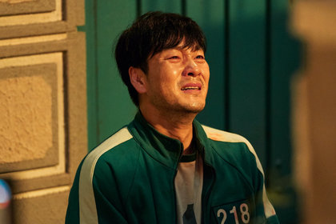

Игра в кальмара
«Игра в кальмара» (кор. 오징어게임) — южнокорейский веб-сериал в жанре выживания, приключенченского боевика, триллера и драмы. Режиссёром и автором сценария стал Хван Дон Хёк. Сериал, состоящий из девяти эпизодов, повествует о группе людей, которые из-за нужды в деньгах принимают приглашение об участии в тайной игре на выживание. 17 сентября 2021 года состоялась мировая премьера сериала на платформе Netflix.

Четыреста пятьдесят шесть человек, испытывающих финансовые проблемы, принимают приглашение на участие в таинственной игре на выживание. Победитель получит 45,6 млрд вон (38,5 млн долларов США). Однако ставки в игре смертельно высоки.


В ролях:
- Ли Джон-джэ — Сон Ки Хун (№ 456): водитель и любитель азартных игр. Живёт со своей престарелой матерью, пытается финансово обеспечить свою дочь Ка Ён. Участвует в игре, чтобы погасить свои многочисленные долги.
- Пак Хэ-су — Чхо Сан Воо (№ 218): выпускник Сеульского национального университета и руководитель инвестиционной группы. Разыскивается за кражу денег у своих клиентов.

- О Ён-су — О Иль Нам (№ 001): пожилой мужчина с опухолью головного мозга, который предпочитает играть, а не ждать смерти снаружи.
- Хо Сон-тхэ — Чан Док Су (№ 101): гангстер, который использует любые средства, чтобы выжить. Вступает в игру, чтобы погасить свои долги.
- Анупам Трипати — Али Абдул (№ 199): иностранный работник из Пакистана. Вступает в игру, чтобы обеспечить свою жену и ребёнка.
- Ви Ха-джун — Хван Чун Хо, молодой офицер полиции, который пробирается в игру, чтобы найти своего пропавшего брата.

- Ли Ю-ми — Чи Ён (№ 240): молодая девушка, которая только что вышла из тюрьмы, отсидев срок за убийство своего отца-агрессора.